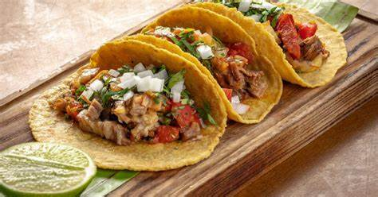
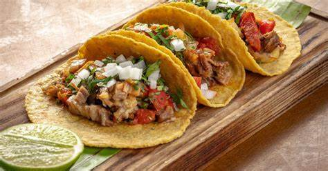
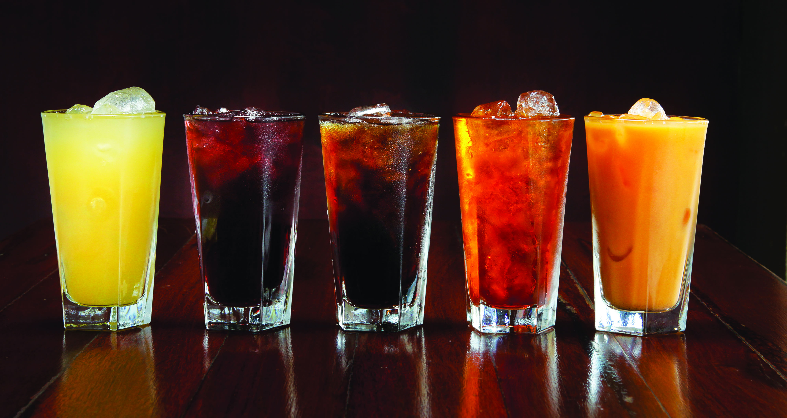
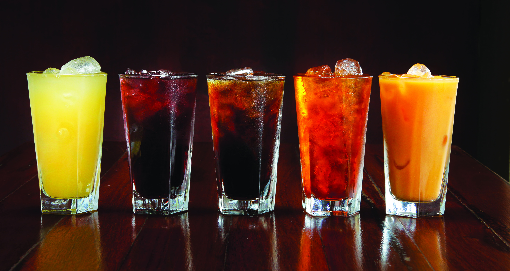

Bienvenidos a Taquería El Gato
Donde los sabores se despiertan y los bigotes se erizan.
 

 

Bienvenido a un festín de sabores auténticos, donde cada bocado es una explosión de tradición y pasión. "El taco perfecto no existe… hasta que pruebas los nuestros."
Accede a nuestro menú dando Click Aquí
Ubicación
Aqui va la ubicación
Sobre Nosotros
 Más que un restaurante, somos un espacio donde la comida se disfruta, las conversaciones fluyen y los momentos se vuelven inolvidables.
Más que un restaurante, somos un espacio donde la comida se disfruta, las conversaciones fluyen y los momentos se vuelven inolvidables.
Sobre Nosotros - Taquería El Gato
Bienvenidos a Taquería El Gato, el lugar donde cada taco cuenta una historia de sabor, tradición y pasión por la buena comida. Desde nuestros inicios, hemos querido llevar la auténtica experiencia de los tacos mexicanos a cada rincón de nuestra comunidad, ofreciendo un espacio cálido y acogedor donde los sabores caseros se sienten como en casa.
Nuestra Historia
El Gato nació de un sueño familiar que comenzó hace más de 20 años, cuando un pequeño puesto en la esquina de una calle llena de vida se convirtió en el centro de reuniones, risas y momentos inolvidables. Inspirados por las recetas tradicionales de nuestras abuelas y los sabores que nos acompañaron durante nuestra infancia, decidimos abrir un lugar donde no solo se sirviera comida, sino también se compartieran momentos de alegría y camaradería.
A lo largo de los años, nuestra taquería ha crecido, pero nuestro compromiso con la calidad y la autenticidad sigue intacto. Seguimos utilizando ingredientes frescos, preparados con esmero, y manteniendo el mismo amor por cada taco que preparamos. Cada bocado es un reflejo de nuestra historia, un homenaje a nuestras raíces y a la rica tradición gastronómica mexicana.
Nuestros Valores
En Taquería El Gato, nuestros valores son fundamentales para cada acción que tomamos. Creemos en ofrecer más que solo comida, buscamos crear una experiencia completa para nuestros clientes. Nuestros valores principales son:
Autenticidad: Nos enorgullece mantener vivas las recetas tradicionales mexicanas, adaptándolas a los tiempos modernos pero respetando siempre la esencia de la cocina casera. Calidad: Seleccionamos solo los ingredientes más frescos y de la mejor calidad, para garantizar que cada taco sea una explosión de sabor en tu paladar.
Compromiso con la comunidad: Nuestra taquería no es solo un negocio, es un espacio donde nos conectamos con nuestros clientes y apoyamos iniciativas locales. Creemos en fortalecer el tejido social y ser parte activa de nuestro entorno. Pasión: Todo lo que hacemos está guiado por una pasión por la cocina y por ofrecer lo mejor de nosotros mismos. Desde el primer taco hasta el último detalle, cada aspecto de Taquería El Gato está lleno de dedicación. Ven a disfrutar de un taco que va más allá de lo ordinario. En Taquería El Gato, nos esforzamos por crear un ambiente donde puedas saborear la tradición, disfrutar de un excelente servicio y sentirte como en casa. Te invitamos a formar parte de nuestra familia, probar nuestros platillos y ser parte de esta historia de sabor y tradición.

¿Tienes alguna duda? ¡Escríbenos!
"Aquí puedes ponerte en contacto con nosotros para resolver cualquier duda, pregunta o inquietud que tengas. Nuestro equipo está disponible para ofrecerte la atención que necesitas y asegurarse de que tengas la mejor experiencia posible. ¡No dudes en escribirnos, estamos aquí para ayudarte!"